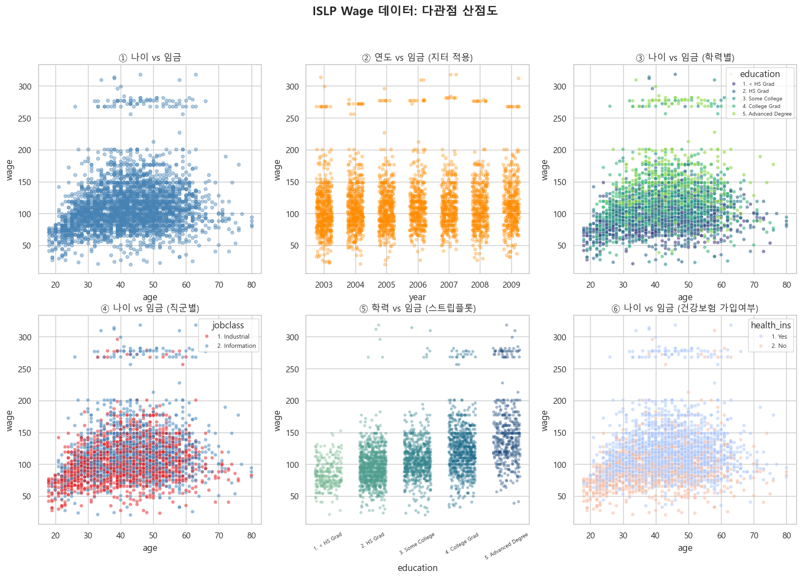
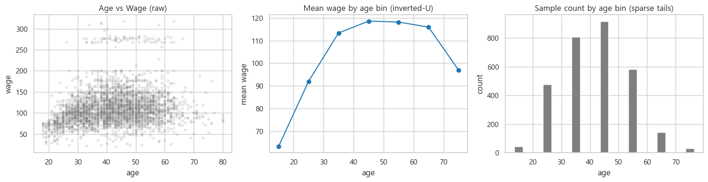
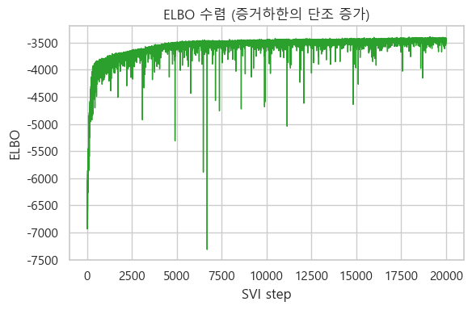
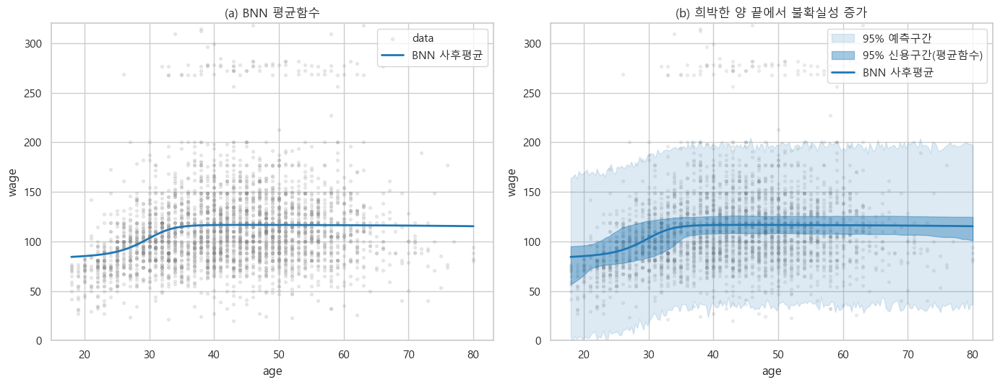

ISLR Wage 데이터 (n = 3,000) · NumPyro 변분추론(SVI)
한국방송통신대학교 통계·데이터과학과
w = 단일 값 → 예측선 1개, 신뢰도 없음
w ~ 분포 → 예측선의 띠(구간), 불확실성 정량화

연령·연도·학력·직군·건강보험 등 여러 관점에서 본 임금 — 연령에 따른 비선형 상승과 임금의 이질성이 관찰된다.

(중) 연령대별 평균임금은 18세 76 → 40대 119 정점 → 60대 이후 감소하는 역U자. (우) 표본은 중년층에 집중, 양 끝은 희박 — 이후 불확실성 분석의 핵심 배경.
은닉층 2개(각 16유닛, tanh) · 가중치 사전분포 w ~ 𝒩(0, s²) · σ ~ HalfNormal(1)


(a) BNN 사후평균은 역U자를 재현. (b) 95% 신용구간(평균함수)과 예측구간(잡음 포함)이 데이터가 희박한 청년·고령 구간에서 넓어진다 — "모르는 곳에서 모른다고 말하는" 추론.
| 모형 | 검정 RMSE | 비선형 | 불확실성 표현 |
|---|---|---|---|
| 다항회귀 (4차) | 39.98 | O | 신뢰구간(평균함수만) |
| 일반 신경망 (MLE) | 40.32 | O | 없음 |
| 베이지안 신경망 (SVI, 은닉 2층) | 40.26 | O | 신용구간 + 예측구간 |
핵심 메시지 — "같은 정확도라도, 모를 때 모른다고 말할 수 있는 모형이 낫다."
감사합니다.